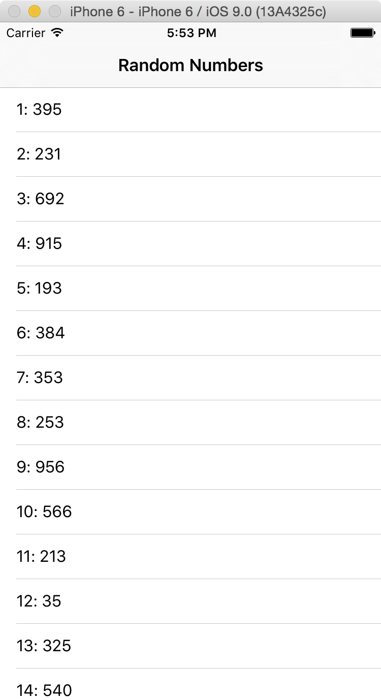

There are 2 projects in this part of the exam. To get the full number of points your app must work correctly. However, partial credit will be given generously. Do as much as you can on every part of the projects. If you get stuck, move on and get more points in another part of the project. You can still do very well on this part of the exam even if your apps don’t run. You are trying to communicate to your instructor that you understand the concepts the projects cover. Also note that just because your apps run correctly doesn’t mean you automatically get all the points. Full credit requires running correctly, having good code, as well as having sound architecture and design.
You do not need to print any project files or show them them to me. When you are done with the exam you need to compress the project directories into a .zip files and email them to me. Read the instructions at the top of the exam for more details.
Create a new Command Line Tool in Xcode named Exam2Project1.
Write the tool as follows.
1. Use the Callbacks lab and the Time Display project as your guides.
2. Write an app that outputs a random number between 1 and 1000 and the average of all the generated numbers to the console every second.
3. Here's how to get a random number between 1 and 1000
Int(arc4random_uniform(1000 + 1))
4. You won't need to create an array to hold all the numbers. The average is calculated like this:
average == total accumulated value of the numbers / count of the numbers
5. This means you should have a variable for: the current random number, the total of all the numbers added together, the total number of random numbers that have been output, and the average.
6. You will do all this in a new Class. Just like in Callbacks, one function will be called by an NSTimer and will have to have this on the line above the function.
@objc
This function will:
print(self).7. The class should conform to the CustomStringConvertible protocol. (That new protocol has replaced Printable.) The description property will return a string like this:
random number: 716, average: 577.4
8. In the main.swift file you should:
9. Sample output after letting the app run for a while.
random number: 3, average: 604.5
random number: 738, average: 613.4
random number: 137, average: 583.625
random number: 743, average: 593.0
random number: 688, average: 598.277777777778
random number: 63, average: 570.105263157895
random number: 716, average: 577.4
random number: 728, average: 584.571428571429
random number: 735, average: 591.409090909091
random number: 570, average: 590.478260869565
Create a new empty project. Name it Exam2Project2
Write an iOS app that looks like this.

The app's table view will display 1000 random number between 1 and 10,000. You can use this code to generate the random numbers.
Int(arc4random_uniform(10000 + 1))
You will not need to store the numbers. You can generate them on the fly when you configure the cell.
Each row of the table view number display the row number starting at 1, a colon, a space, and then the random number.
1: 6034
<row number>: <randon number>
The title of the table view should be Random Numbers.